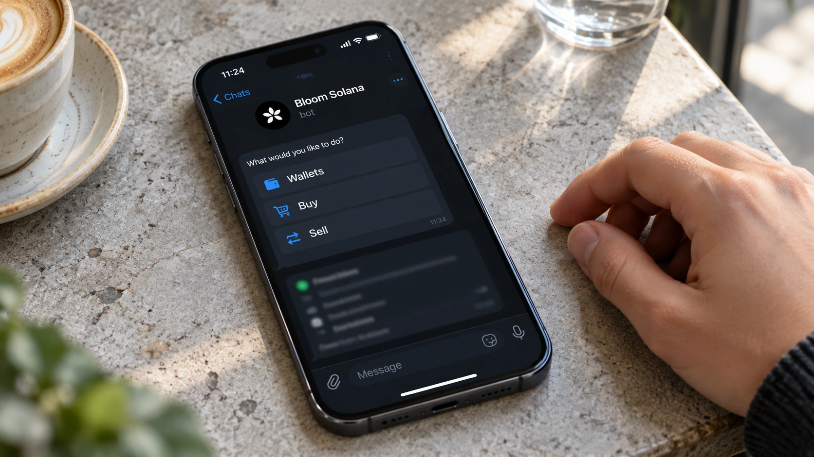

Bloom Trading Bot Promises Repayment After Reported Wallet Drains
Reports trace about 9,408 SOL to a suspected drainer while Bloom says it will reimburse confirmed losses; the cause and final scope remain unresolved.

Bloom, a service that automates cryptocurrency trading through Telegram and other interfaces, has promised to reimburse confirmed wallet losses as it investigates reports of unauthorized transfers. TokenPost reported Monday that the team had identified nine affected users. Separate tracing cited in the coverage put receipts at a suspected drainer address at about 9,408 SOL, valued at roughly $954,000 at the time.
The reported loss is not yet a final audited total. Neither the number of wallets traced nor the company's count of identified users establishes the complete scope on its own. One person can control multiple wallets, and an investigation may not yet have matched every address to a claimant. The two counts should not be presented as interchangeable measures of affected customers.
The incident follows our report on CoinDCX's old-wallet failure, but it should not be assumed to share the same mechanism. CoinDCX described a failed sweep process. Bloom's root cause remains under investigation. A similar outcome for users does not establish that the same technical safeguard failed.
A repayment pledge still needs execution
TokenPost says Bloom temporarily disabled some services as a precaution and is reviewing reported wallet activity. Its reported commitment is to send reimbursements to new, secure wallets for users whose losses it confirms. That is a promise to repay, not evidence that every affected person has already received funds or that a final repayment timetable has been published.
Crypto Briefing separately reported approximately 48 to 49 affected wallets and said Bloom was examining a possible third-party compromise. That possibility remains a hypothesis. TTN has not independently reconciled the full transaction set, verified every ownership label or established access to the infrastructure involved. The coverage does not justify declaring that a named supplier caused the losses.
For readers, the distinction between a transfer and a trade is important. An adverse market move reduces the value of an asset a wallet still holds. An unauthorized transfer removes assets from the address. Expressing a reported drain in dollars describes its value at a particular moment; a later change in Solana's price does not change the number of SOL said to have moved.
Automation expands the operational perimeter
Bloom's official website describes connected browser-extension, web-manager and Telegram tools using a shared execution engine. Its wallet documentation allows users to create or import wallets and manage more than one. The product is therefore more than a chat window displaying prices: it is infrastructure capable of acting on trading instructions across connected accounts and networks.
Those features explain the appeal of automation without proving what went wrong here. An order can execute while its user is away, and the same convenience makes access controls important. A failure might involve a key, an account, an integration or a provider, but selecting one of those explanations before investigators establish it would turn a risk category into an unsupported accusation.
Bloom's published Solana FAQ describes withdrawal-address locking and a 24-hour cooldown after unlocking. It also distinguishes protection against adverse transaction ordering from other security controls. These documented features are useful background, not evidence that a particular setting prevented or caused Monday's reported drains. A control designed for one type of risk does not automatically cover every route by which assets can move.
What would clarify the incident
A useful postmortem would reconcile the affected addresses, explain the access path and identify the period of exposure. It would also distinguish restored service from completed remediation. A bot becoming available again is observable product behavior; proving that compromised access can no longer be used requires a more specific technical account.
The same standard applies to repayments. Transaction records and confirmation from recipients would provide stronger evidence than a general commitment. A complete account should identify how confirmed claims are assessed without exposing private customer information, and explain whether any unresolved cases remain. Publishing a large aggregate wallet count alone cannot answer those questions.
Our coverage of Electrum's wallet security update shows the value of naming a specific risk and the change intended to address it. For Bloom, that level of explanation is still missing from the material reviewed here. The immediate story is a reported loss and a repayment pledge; the cause, final scope and completed restitution remain the evidence to watch.
Sources and methodology
Sources checked October 26, 2026. Company statements, reported findings and forecasts are attributed in the text. Financial and operational implications are editorial analysis. The generated cover is illustrative.